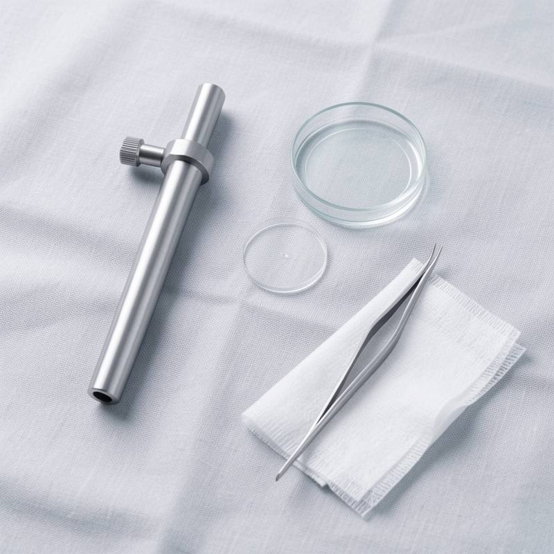
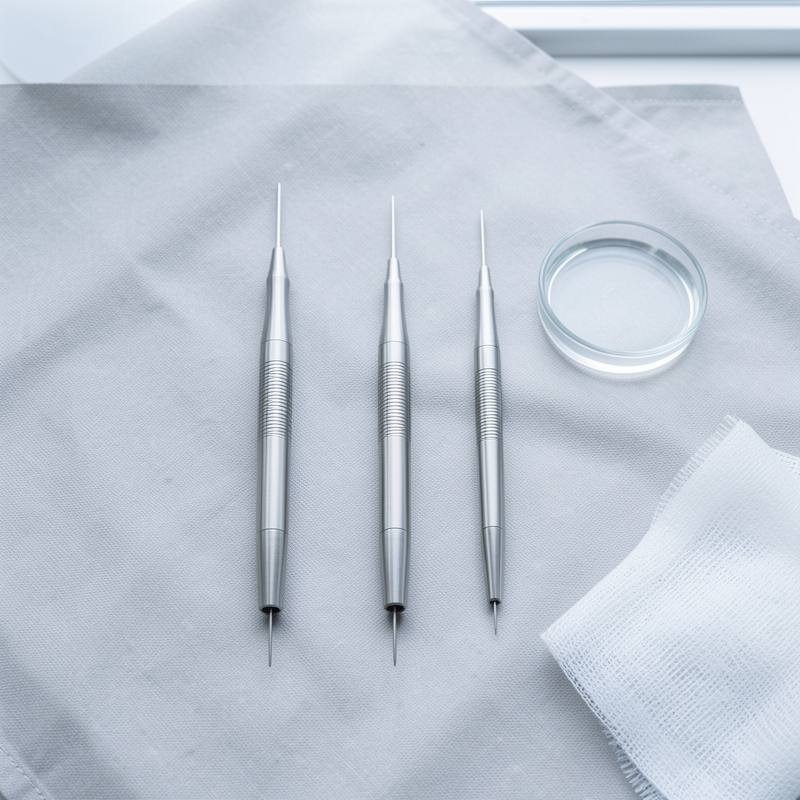
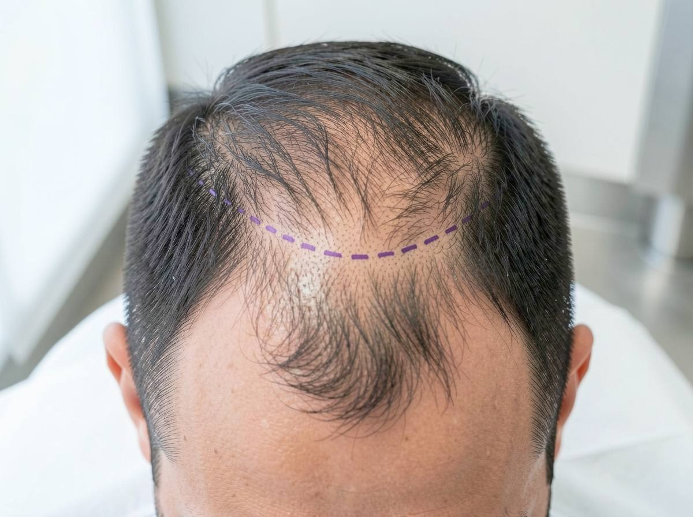

Inicio › Injerto capilar
Injerto capilar, diseñado contigo y hecho por el mismo médico
FUE con zafiro o DHI, según tu pelo. Precio por unidad folicular por escrito, y un año de revisiones incluido.
Antes de hablar de técnica, hablemos de si te conviene
Un injerto mueve pelo de la nuca, que no se cae, a la zona que se ha quedado sin él. Funciona si esa zona donante tiene densidad suficiente y si la caída está más o menos frenada. En la valoración lo miramos con tricoscopia y te decimos lo que vemos.
Solemos decir que no, o que aún no, cuando…
- La caída está muy activa y todavía no has probado tratamiento médico
- La zona donante es fina o poco densa para lo que habría que cubrir
- Tienes menos de 25 años y las entradas siguen avanzando
- Hay una alopecia difusa o una causa médica que tratar primero
Si te decimos que no eres candidato no te cobramos la valoración, porque no la cobramos a nadie.
FUE o DHI: dos maneras de implantar el mismo pelo
Las dos extraen las unidades foliculares una a una de la zona donante. Cambia cómo se colocan.

FUE con zafiro
Primero se abren los canales con cuchillas de zafiro y después se colocan los injertos. Permite cubrir zonas grandes en una sesión. Hay que rapar la zona donante.
- Mejor para entradas y coronilla amplias
- Recuperación de la zona receptora algo más visible la primera semana

DHI
Cada unidad se implanta con un implantador tipo bolígrafo que abre y coloca a la vez. Da más control sobre el ángulo en la línea frontal y permite no rapar toda la cabeza.
- Mejor para densificar una línea frontal o zonas pequeñas
- Sesiones más largas y algo más caras
¿No sabes cuál? En el estimador puedes marcar "Que me lo aconsejéis", y en la valoración te explicamos por qué te conviene una u otra.
El día de la intervención, hora a hora
-
Llegas y dibujamos la línea
La Dra. Salvat marca contigo la línea frontal con rotulador. No se empieza hasta que te convence.
-
Anestesia local
Unos pinchazos al principio; a partir de ahí no notas dolor en la zona.
-
Extracción
Se sacan las unidades de la nuca, una a una. Estás tumbado boca abajo; puedes escuchar música o ver una serie.
-
Comida
Paramos a comer algo en la clínica.
-
Implantación
Se colocan las unidades siguiendo el diseño y el ángulo natural de tu pelo.
-
A casa
Con las instrucciones por escrito, la medicación y un teléfono al que llamar esa misma noche.

Horas orientativas para unas 2.500 unidades. Las sesiones pequeñas terminan antes.
Cuándo vuelves a tu vida normal
| Qué | Cuándo |
|---|---|
| Trabajo de oficina | Del 3.º al 7.º día |
| Trabajo físico o al aire libre | A los 14 días |
| Gorra holgada | Desde el día 7 |
| Deporte suave | Desde el día 10 |
| Gimnasio, piscina y playa | Al mes |
| Sol directo en la cabeza | Tres meses con protección |
-
Día 1
Vuelves a casa
Con la zona donante vendada. Las dos primeras noches duermes semiincorporado.
-
Día 10
Se caen las costras
Primera revisión y primer lavado normal. En trabajos de oficina, casi todos han vuelto ya.
-
Mes 1 a 3
Se cae el pelo injertado
Es lo esperado: el folículo se queda y descansa. Aquí hay quien se asusta, por eso te lo contamos ahora.
-
Mes 6
Empieza a notarse
El pelo nuevo sale fino y va ganando grosor. Ya se ve el diseño de la línea frontal.
-
Mes 12
Resultado final
Densidad y grosor definitivos. Última revisión incluida.
Lo que cuesta, y por qué no damos un precio cerrado sin verte
Cobramos por unidad folicular implantada, no por paquetes. En la valoración contamos cuántas necesitas y te lo damos por escrito. Si el día de la intervención hacen falta menos, pagas menos.
Incluye la intervención, la medicación de los primeros días, el champú y las revisiones del primer año. Financiación a plazos.
Calcular mis injertos| Caso | Unidades | Desde |
|---|---|---|
| Entradas leves | 900 a 1.400 UF | 2.300 € |
| Entradas marcadas | 1.500 a 2.100 UF | 2.900 € |
| Frente y coronilla | 2.200 a 3.000 UF | 3.500 € |
| Zona superior amplia | 3.000 a 3.800 UF | 4.200 € |
Preguntas sobre el injerto
¿Te queda alguna? Escríbenos por WhatsApp y te contesta alguien del equipo médico.
¿Cuántos injertos necesito y cuánto cuesta cada uno?
Depende de la zona a cubrir y de cómo sea tu pelo. Unas entradas leves pueden necesitar unas 1.000 unidades foliculares; una zona superior amplia, más de 3.000.
El estimador te da una cifra orientativa en un minuto. El número exacto lo fija el médico con tricoscopia en la valoración, y el precio por unidad te lo damos por escrito.
¿Se va a notar que es un injerto?
Lo que delata un injerto es una línea frontal recta y densa de golpe. La diseñamos irregular, con unidades de un solo pelo delante, y acorde con tu edad: una línea de 20 años en una cara de 45 no queda natural.
La dibujamos contigo antes de empezar, y no se opera hasta que te convence.
¿Quién me opera?
La Dra. Irene Salvat dirige todas las intervenciones y hace la parte médica: el diseño, la anestesia y la apertura de los canales. La acompaña un equipo de enfermería con formación específica en injerto capilar.
¿Duele? ¿Cuántos días tendré que faltar al trabajo?
Se hace con anestesia local, y lo que más se nota son los pinchazos del principio. Después, la mayoría habla de molestias leves las dos primeras noches.
En un trabajo de oficina se suele volver entre el tercer y el séptimo día. Si tu trabajo es físico o al sol, cuenta con dos semanas.
¿Por qué no hacérmelo en Turquía?
Allí puede salir más barato, y hay clínicas muy buenas. Lo difícil es el después: si algo no evoluciona bien, tu médico está a un vuelo de distancia. Aquí las revisiones del primer año están incluidas y a una llamada.
¿Se cae el pelo injertado?
Entre el primer y el tercer mes, sí: es la caída de choque y es esperable. El folículo se queda y vuelve a producir pelo a partir del cuarto mes. El pelo injertado, una vez asentado, es tan duradero como el de la nuca.
¿Tendré que seguir con algún tratamiento?
El injerto no frena la caída del pelo que ya tienes. Por eso casi siempre recomendamos mantener un tratamiento médico, para no tener que volver a operar dentro de unos años.
¿Hay que rapar toda la cabeza?
Con FUE se rapa la zona donante; si llevas el pelo algo largo, la tapa. Con DHI a veces basta con rapar una franja. Lo vemos según el número de unidades.
Mira a qué dibujo te pareces y empieza por ahí
En un minuto tienes una estimación de unidades y precio. La valoración con el médico es gratuita.